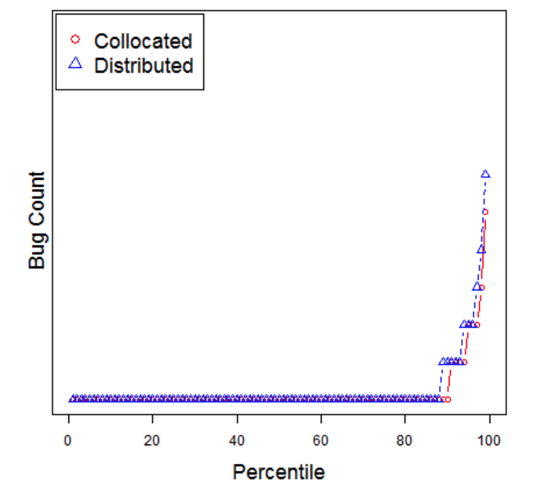
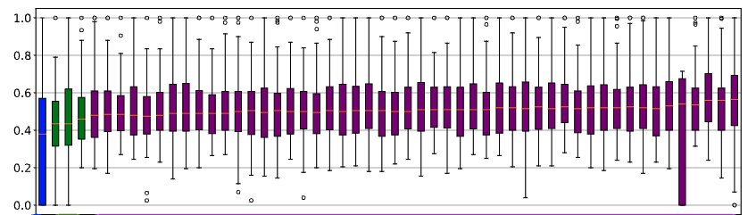

csc 591-024, (8290)
csc 791-024, (8291)
fall 2024, special topics in computer science
Tim Menzies, timm@ieee.org, com sci, nc state
home :: timetable :: syllabus :: groups :: moodle :: license

stats
Tl;DR
Find stats.py
Run python3.13 stats.py.
Collect your Nobel prize.
Does 42==44?
If we watched 100 women and men walk past us and their mean walking tipped was 42 and 44 cm/second (for men and women respectively), it is true that men walk faster than women?
This is an example of the problem of comparing samples. Which can get tricky.
These problem as two parts:
- Are the samples distinguishable?
- If we picked a number from one sample, can we tell of it can be found on the other?
- This is the (badly named) singificance test.
- Is the difference between them non-trivial:
- This is the effect size test
- And we want to ignore small effects.
SE example:

- Consider software built by teams who are either (a) located in the same site or (b) distributed around the globe. i- Distributed development is infamous for lower quality due to geographical dispersion which raises issues of communication, and problems building mutual confidence among distributed teams.
- However, in 2009, Bird et al. 1 checked for those
effects in distributed Microsoft projects.
- They found that management can successful mitigate for these detrimental effects (team members need to be organized along product lines and not on their geographical location).
- But in 2013, Kocaguneli et al. 2 reported a statistically
significant effect (a decrease) in the quality of software generated by
Microsoft’s distributed development team (compared to developers who
worked locally together).
- However, they could that the difference in quality was a “small effect”; i.e. neglicable
- i.e. it was not irresponsible for Microsoft to continue on with distributed development.
Note that the above needed precise definitions for statistically significant effect and small effect size. How to find those?
Easy Case: means far away and the curves do not overlap
- So the curves are significantly different
- with large effect
Now we increase the standard deviation.
- So much overalp. Curves may not be significantly different
- And now that mean seperation seems less different
Terminology
We sample under different treatments (e.g. we put weights on our people, then ask them to walk around)
- and the sample size is the number of measurements made per treatment.
Sometimes we assume samples come from different distributions (e.g. normal, binomial, etc).
We want to know how to separate samples that are significty distinguisable, by more than a small effect size.
Parametric Statistical Tests
If we assume that our data comes from a certain distrubtion then we could write a formula to compute the overlap or, if we throw darts at both diistributions, waht are the odds that we will hit numbers from one distribution, not aother.
This is called parametric statisitics. You assume a formula (e.g. Gaussian) then look to filling in the parameters of that distribution (for Gaussian, the mean \(\mu\) and the standard deviation \(\sigma\) ).
But there are so many distributions so it is not clear what formula we should use.
Also, real world data may be conform to a simple single distribution. For exam,e here are the query times for 50 SQL statements in one program.
If you want a justification for parametric tests:
- To select a “best” methods, apply the advice of Rosenthal et
al. [46]
- Rosenthal, R., Cooper, H., Hedges, L.: Parametric measures of effect size. The handbook of research synthesis 621(2), 231–244 (1994). 3350 citations.
- Consider results that are bounded 0..1. Such results are not prone to extreme outlier effects (such extreme outliers are indicators for long-tail effects which, in turn suggest that it might be better to use non-parametric methods).
- Assuming no extreme outliers, non-parametric tests have less statistical power than parametric ones.
- Rosenthal et al. discuss different parametric methods for asserting that one result is with some small effect of another (i.e. it is “close to”).
- They list dozens of effect size tests that divide into two groups:
- the “r” group that is based on the Pearson correlation coefficient;
- or the d family that is based on absolute differences normalized by (e.g.) the size of the standard deviation.
- Rosenthal et al. comment that “none is intrinsically better than the other”.
- Here, use the most direct parametric methods.
- Using a “d” family method, it can be concluded that one distribution is the same as another if their mean value differs by less than Cohen’s delta (d*standard deviation). Note that d is computed separately for each different evaluation measure (recall, false alarm, AUC). To visualize that “close to” analysis, in all our results:– Any cell that is within d of the best value will be highlighted in gray. All gray cells are observed as “winners” and all the other cells are “losers”.– For recall and AUC, the “best” cells have “highest value” since the optimization goal is to maximize these values.– For false alarm, the “best” cells have “lowest value” since false alarms is to be minimized.
- As to what value of d to use in this analysis, we take the advice of
a widely cited paper by Sawilowsky [47] (this 2009 paper has 3470
citations).
- Sawilowsky, S.S.: New effect size rules of thumb. Journal of Modern Applied Statistical Methods 8(2), 26 (2009)
- That paper asserts that “small” and “medium” effects can be measured using d = 0.2 and d = 0.5 (respectively).
- Splitting the difference, we will analyze this data looking for differences larger than d = (0.5 + 0.2)/2 = 0.35.
Warning: I don’t buy the above except for making approx arguments about the value of X vs Y. So I might use “d= 0.35” to dispense with tiny differences in results.
Non-parametric stats
Scott-Knott:
Many statistical methods (e.g. t-test, Tukey, Duncan, Newman-Keuls procedures) suffer from have overlapping problems. - By overlapping we mean the possibility of one or more sample to be classified in more than one group. - In fact, as the number of samples increase, so to does the the number of overlaps, which makes it hard to distinguish the real groups to which the means should belong. - The Scott-Knott method 3 does not have this problem, what is often cited as a very good quality of this procedure.
Scott-Kott is a recursive clustering procedure that - sorts the samples - divided them on the largest expected difference in the mean before and after division - then recuses on each half, but only if the two halfs are statistically different
The halves are picked to maximize:
\[ E(\Delta) = \frac{|l_1|}{|l|}abs(E({l_1}) - E({l}))^2 + \frac{|l_2|}{|l|}abs(E({l_2}) - E({l}))^2\]
(here \(|l_1|\) means the size of list \(l_1\))
For example, support I had four samples labelled x1,x2… etc
def some1(n=5):
report([ SOME([0.34, 0.49 ,0.51, 0.6]*n, txt="x1"),
SOME([0.6 ,0.7 , 0.8 , 0.89]*n, txt="x2"),
SOME([0.09 ,0.22, 0.28 , 0.5]*n, txt="x3"),
SOME([0.6 ,0.7, 0.8 , 0.9]*n, txt="x4"),
SOME([0.1 ,0.2, 0.3 , 0.4]*n, txt="x5")])
some1()I would sort them by their median value the draw a little box plot of their 10-to-30th values, their median, and their 70-to-90th value:
#
0, x3, 0.28, 0.06, ------ *----------|
0, x5, 0.30, 0.10, ----- *---- |
#
1, x1, 0.51, 0.02, ------- *----
#
2, x2, 0.80, 0.10, | ----- *---
2, x4, 0.80, 0.10, | ----- *--- Note the left-handside sk rank column. This reports what
happens after SK sorts the samples and decides which ones are
different
- A treatment has the same ranked the one before it,
- it is not statistically distinguishable
- by more than small effect.
But how does it do it? The Scott & Knott method make use of a top-down clustering algorithm, where, starting from the the whole group of observed mean effects, it divides, and keep dividing the sub-groups in such a way that the intersection of any two groups formed in that manner is empty.
This means that \(N\) samples might get ranked using only \(\log_2(N)\) statistical comparisons - and even less, if ever sub-trees high up int the process are found to be not statistically different - Also, Scott-Knott converts the problem of ranking samples to clustering probkem (which I do understand) rather than a stats problem (which, in all fairness, I understand only weakly).
def sk(somes,epsilon=0.01):
"Sort nums on mid. give adjacent nums the same rank if they are statistically the same"
def sk1(somes, rank, cut=None):
most, b4 = -1, SOME(somes)
for j in range(1,len(somes)):
lhs = SOME(somes[:j])
rhs = SOME(somes[j:])
tmp = (lhs.n*abs(lhs.mid() - b4.mid()) + rhs.n*abs(rhs.mid() - b4.mid())) / b4.n
if tmp > most and (somes[j].mid() - somes[j-1].mid()) > epsilon:
most,cut = tmp,j
if cut:
some1,some2 = SOME(somes[:cut]), SOME(somes[cut:])
if True: #not some1.cohen(some2): # and abs(some1.div() - some2.div()) > 0.0001:
if some1 != some2:
rank = sk1(somes[:cut], rank) + 1
rank = sk1(somes[cut:], rank)
return rank
for some in somes: some.rank = rank
return rank
somes = sorted(somes, key=lambda some: some.mid()) #lambda some : some.mid())
sk1(somes,0)
return somesNote the commented out call to some1.cohen(some2).
def cohen(i,j):
return abs( i.mid() - j.mid() ) < the.stats.cohen * i.pooledSd(j)
def pooledSd(i,j):
"Return a measure of the combined standard deviation."
sd1, sd2 = i.div(), j.div()
return (((i.n - 1)*sd1 * sd1 + (j.n-1)*sd2 * sd2) / (i.n + j.n-2))**.5Not Equal
But how to code up !=?. Recall that this needs two
functions
- Are the sample distinguishable?
- If we picked a number from one sample, can we tell of it can be found on the other?
- Is the difference more than a small effect?
- This is the effect size test
def __eq__(i:SOME, j:SOME) -> bool:
"True if all of cohen/cliffs/bootstrap say you are the same."
return i.cliffs(j) and i.bootstrap(j) ## ordered slowest to fastestNote that that this is a conjuction; i.e. to prove “different” I have to prove both things.
CliffsDelta (non-parametric effect size)
This code is simple. For everything \(x\) in one sample, look in the other sample - Count how often there are bigger and larger numbers in the other sample. - If \(x\) has many numbers less and greater than me, then I tend to be the same as the other sample - Since I tend to fall to the middle of the other sample
def cliffs(i:SOME, j:SOME , dull=None):
"""non-parametric effect size. threshold is border between small=.11 and medium=.28
from Table1 of https://doi.org/10.3102/10769986025002101"""
n,lt,gt = 0,0,0
for x1 in i.has():
for y1 in j.has():
n += 1
if x1 > y1: gt += 1
if x1 < y1: lt += 1
return abs(lt - gt)/n < (dull or the.stats.cliffs or 0.197)Bootstrap (non-parametric test for “distinguish-ablity”)
- Summarize the difference in two samples with some
obs(observartion) - Hundreds of times
- Sample with replacement from both samples
- Count how often the observation is larger than the baseline
obs.
- The higher that count, the harder it is to seperate you
- so the lower that count, the more we are sure you are different.
Here’s the code for that. yhat and zhat are
transforms recommended by Efron and Tibshirani to level the playing
field (ensures that both distribution s are scored on mean value that is
common to both distributions).
def bootstrap(i:SOME, j:SOME,confidence=None,bootstraps=None):
"""non-parametric significance test From Introduction to Bootstrap,
Efron and Tibshirani, 1993, chapter 20. https://doi.org/10.1201/9780429246593"""
y0,z0 = i.has(), j.has()
x,y,z = SOME(inits=y0+z0), SOME(inits=y0), SOME(inits=z0)
delta0 = y.delta(z)
yhat = [y1 - y.mid() + x.mid() for y1 in y0]
zhat = [z1 - z.mid() + x.mid() for z1 in z0]
pull = lambda l:SOME(random.choices(l, k=len(l)))
samples= bootstraps or the.stats.bootstraps or 512
n = sum(pull(yhat).delta(pull(zhat)) > delta0 for _ in range(samples))
return n / samples >= (confidence or the.stats.confidence or 0.05)Things to Note
Blurring
“The point was that you have to look at the world as it is, not as some elegant theory says it ought to be.” — M. Mitchell Waldrop

When dealing with many treatments with larte variance,
- results may “blur”
- i.e. many of them are statistically indistinguishable.
For example, at left, 51 of the 55 treatments all receive the same rank.
When such blurring occurs,
- we can conclude is that some of the distinctions made during sampling were unimportant (in the sense that it does not distinguish the individual treatments).
- Which can lead to some startling results….
For another example, consider knn results that scores nearest-neighbor regression using \(100*(predicted-actual)/predicted\)
- Using \(k \in \{1,2,4,8}\) nearest neighbors
- Via training set that contains \(N \in \{512,256,128,32\}\) rows selected at random from auto.csv
- Using a distance function \(p \in \{1,2,4,8\}\) for \((\sum_i (x_i-y_i)^p)^{1/p}\) (and recall that \(p=2\) is Euclidean)
- Where the conclusions of those near neighbors are combined via a
median or triangular kernel function
- median means “pick the middle value”
- triangular means “closer values are weighted more”
\[ \mathit{prediction}= \frac{\sum_i n_i/d_i}{\sum_i 1/d_i} \]
Please consider \((k=4,p=4, N=32, f=\mathit{triangle})\). Notice anything interesting? ### Runtimes and Storage
Parametric stats are very fast and consume little memory (jsut the memory required for the params).
Non-parametric stats are slower (see all that sampling inside
_bootstrap and that \(O(N^2)\) traversal inside
cliffsDelta). So don’t run non-parametric tests inside the
inner-most loop of your reasonong.
If you need a quick and dirty check for differences, just check if the mean difference is larger than a third of the standard deviation of the sample. No, this test is not well-founded. But it is useful as a heuristic.
Then, once you have collected results from (say) 20 repeated runs, run these non-parametric tests as part of your final report generation.
Statistical Wars
So much discussion of “what stats is best”. Very little experimentation on data.
here,s we asking cfliffsDelta (cd), boostrapping (boot), conjuction of both, and sd/3 if two sample are different wjere
- sample1 is 20 numbers from a gaussian (mean=10, sd=3)
- sample2 is just \(x_i * \mathit{inc}\)
Note the large areas of agreement, with a small dispute zone in the middle.
| inc | cd | boot | c+b | sd/3 | dispute? |
|---|---|---|---|---|---|
| 1 | False | False | False | False | |
| 1.02 | False | False | False | False | |
| 1.04 | False | False | False | False | |
| 1.061 | False | False | False | False | |
| 1.082 | False | False | False | False | |
| 1.104 | True | False | False | False | n |
| 1.126 | False | False | False | True | n |
| 1.149 | True | False | False | True | n |
| 1.172 | True | False | False | True | n |
| 1.195 | True | False | False | True | n |
| 1.219 | True | True | True | True | |
| 1.243 | True | False | False | True | n |
| 1.268 | True | True | True | True | |
| 1.294 | True | True | True | True | |
| 1.319 | True | True | True | True | |
| 1.346 | True | True | True | True | |
| 1.373 | True | True | True | True | |
| 1.4 | True | True | True | True | |
| 1.428 | True | True | True | True | |
| 1.457 | True | True | True | True | |
| 1.486 | True | True | True | True |
C. Bird, N. Nagappan, P. T. Devanbu, H. Gall, and B. Murphy. Does distributed development affect software quality? an empirical case study of windows vista. In ICSE, pages 518–528, 2009.↩︎
Kocaguneli, E., Zimmermann, T., Bird, C., Nagappan, N., & Menzies, T. (2013, May). Distributed development considered harmful?. In 2013 35th International Conference on Software Engineering (ICSE) (pp. 882-890). IEEE.↩︎
Scott R.J., Knott M. 1974. A cluster analysis method for grouping mans in the analysis of variance. Biometrics, 30, 507-512.↩︎